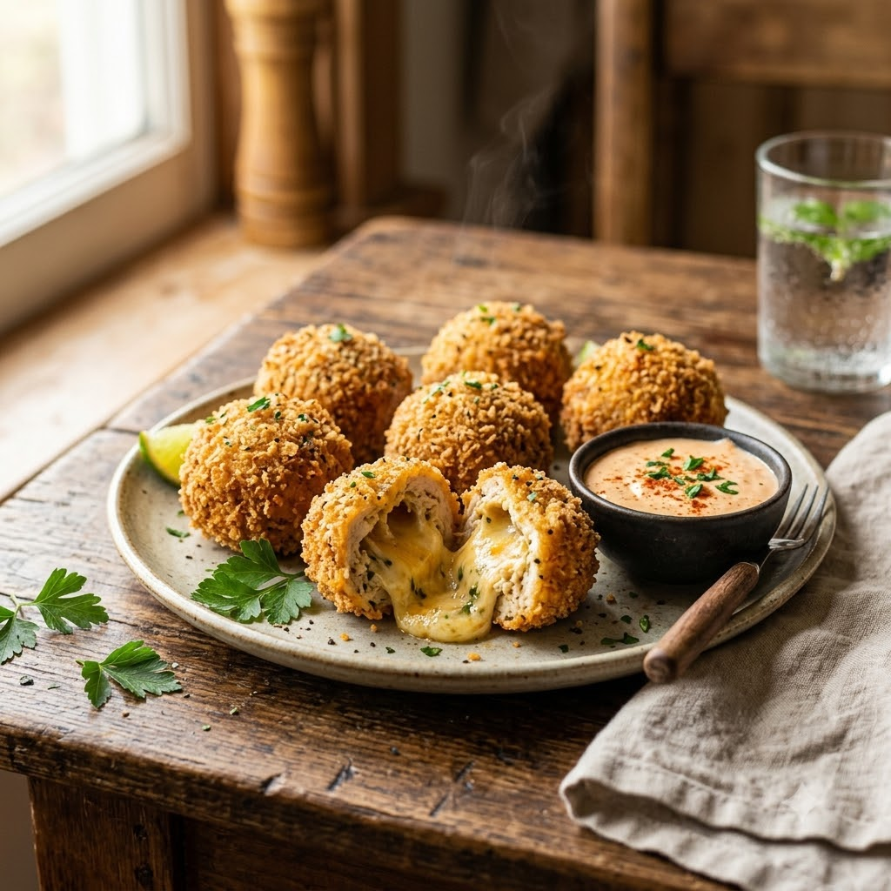

Stuffed Chicken Cheese Balls

Stuffed Chicken Cheese Balls
Airfryer – Fry 190°C 13 min makes ~10
Ingredients
- 250g minced/shredded cooked chicken
- 1/2 cup mozzarella, cubed small
- 1 tbsp mayonnaise
- 1 tsp chilli flakes
- 1/2 cup breadcrumbs
- 1 egg, beaten
- Oil spray
Method
1Preheat: Preheat the Airfryer to 190°C for 4 minutes before adding the food to the basket.
2Mix chicken, mayonnaise and chilli flakes; shape portions around a cheese cube into balls.
3Dip each ball in beaten egg, then coat in breadcrumbs.
4Spray with oil and arrange in the basket, spaced apart.
5Air-fry at 190°C for 13 minutes, turning once, until golden and cheese is melted inside.